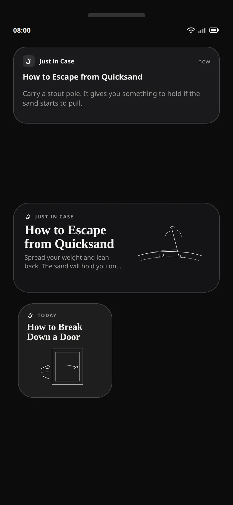
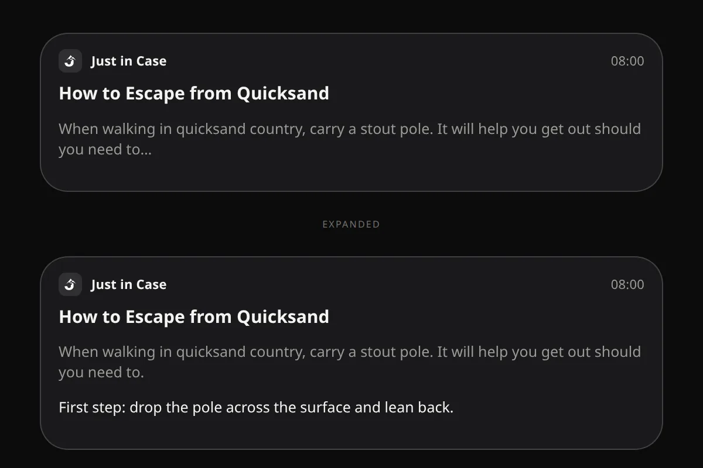
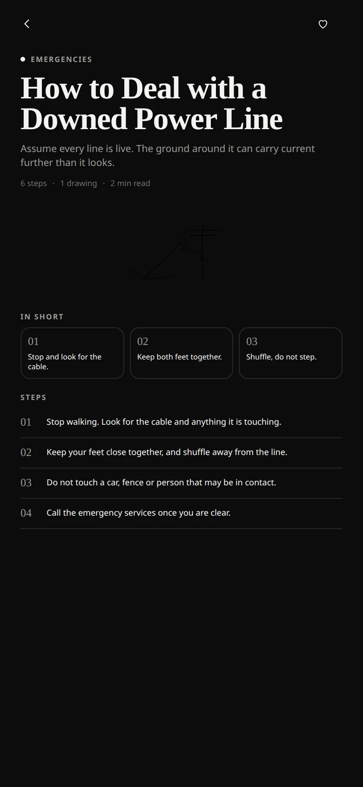
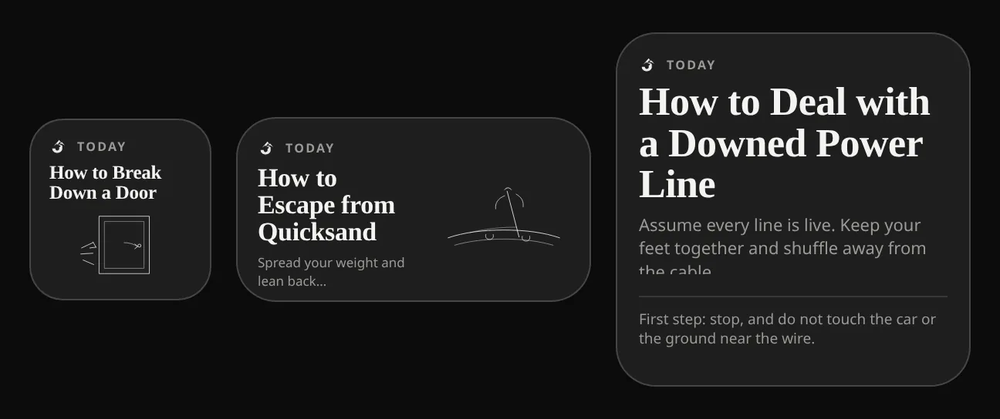
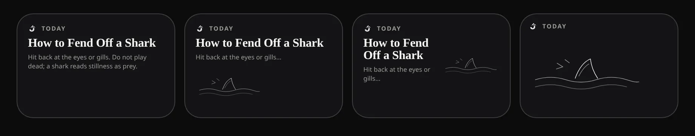
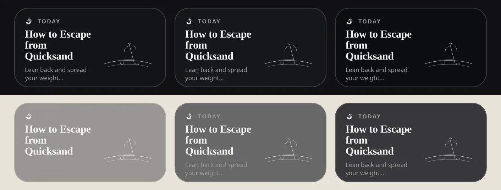
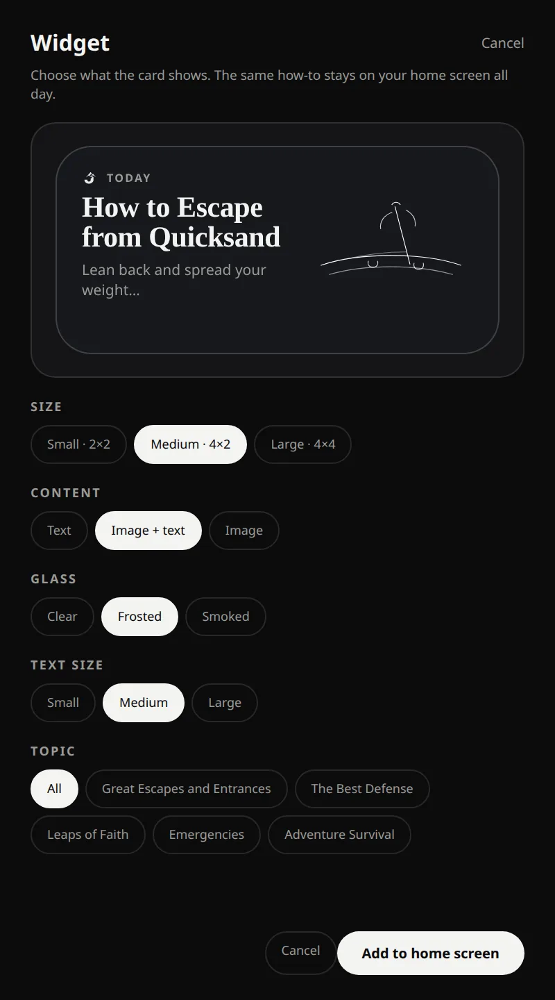
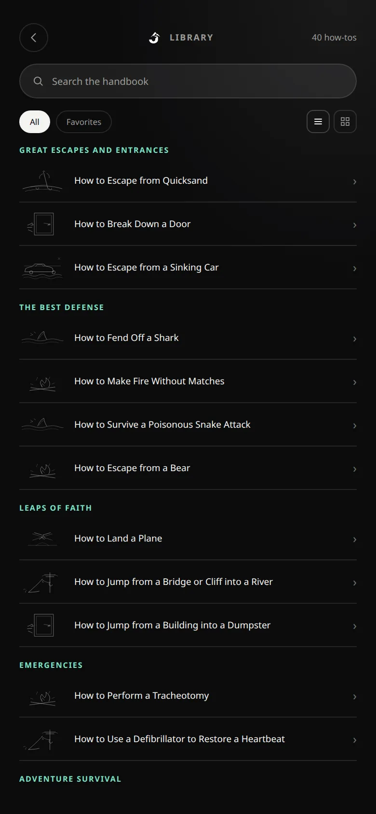

One how-to a day,just in case.
One illustrated technique on your home screen each morning, from a library of forty.

Sample entries shown.
One card, then carry on.
One how-to, in the widget, the notification and the Today screen.
-
Morning
The notification arrives
A quiet notification with the title and the first step.
-
Home screen
The widget shows it
Small, medium or large, the same entry waits there.
-
A free minute
When you’re curious
Tap it for the steps, in order, with the drawing.
-
Tomorrow
A new one
The next one replaces it. None repeats until forty are done.


A card you can size.
One how-to at a time. Long text ends in an ellipsis; a tap opens it.
- Content Text · Text + image · Image + text · Image
- Glass Clear · Frosted · Smoked
- Text size Small · Medium · Large
- Topic All, or one chapter




Forty, in five chapters.
Forty entries, each illustrated, none longer than a coffee queue.
-
01
How to Escape from Quicksand
Great Escapes and Entrances
-
02
How to Break Down a Door
Great Escapes and Entrances
-
03
How to Deal with a Downed Power Line
Great Escapes and Entrances
-
04
How to Fend Off a Shark
The Best Defense
-
05
How to Survive an Earthquake
Adventure Survival
-
06
How to Land a Plane
Adventure Survival

Nothing to sign in to.
The library ships inside the app. Settings and favourites stay on the phone.
- AccountNone
- NetworkWorks fully offline
- TrackingNone
- Data Settings and favourites stay on your phone
Free on Android.
One APK, installed directly. A personal project, not a store release.
-
Android · direct APK
Just in Case